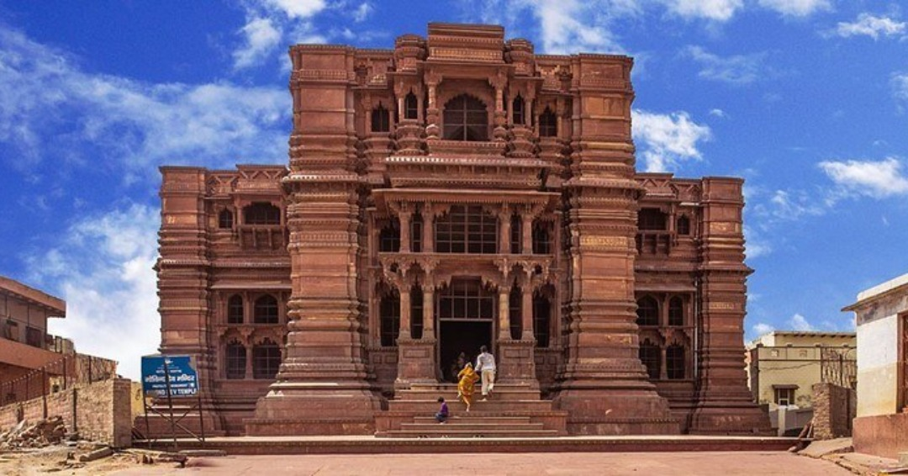
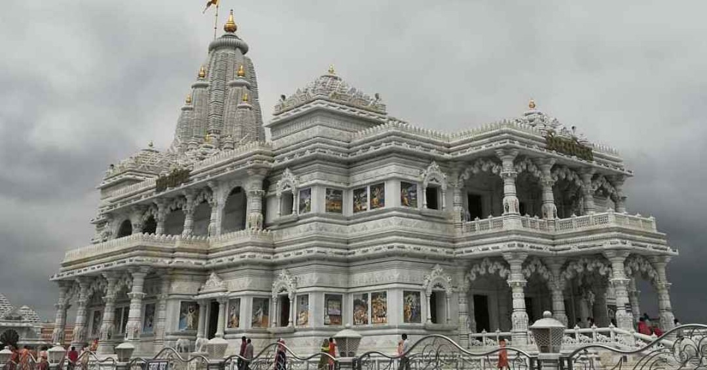
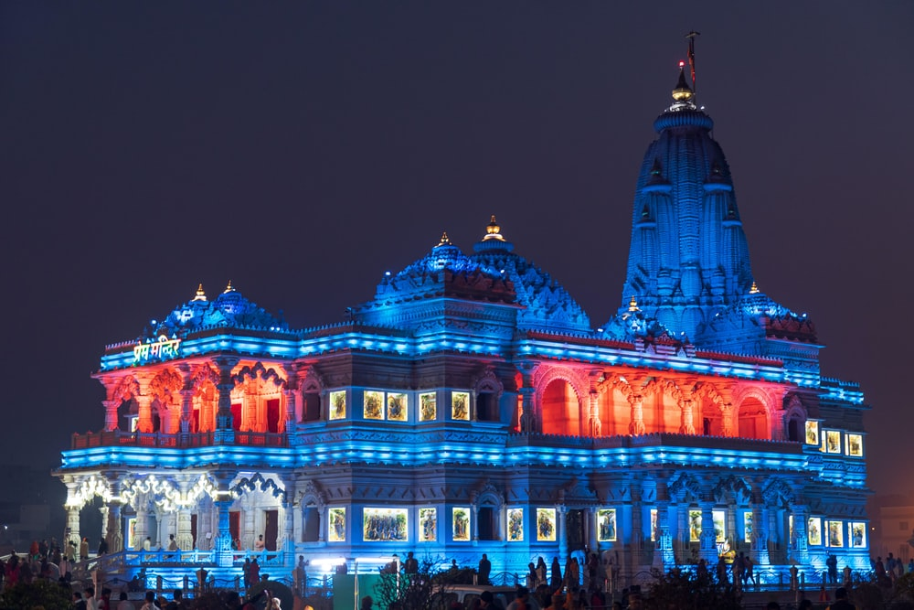

1 / 5

Radha-GovindDevJi Temple, Vrindavan
2 / 5

Prem Mandir, Vrindavan
3 / 5

Sri RangJi Mandir, Vrindavan
4 / 5

Sri Sri Krishna Balram Temple,Vrindavan
5 / 5

Sri RadhaRamanLal Temple,Vrindavan

Sri RadhaRaman Temple
Sri Radha Raman Temple, is an early modern period Hindu temple in Vrindavan, India dedicated to Lord Krishna as Radha Ramana. The temple was constructed at the request of Gopala Bhatta Goswami in 1542 AD....
Read More

BankeyBihari Temple
Bankey Bihari Temple is a Hindu temple of the Radha-vallabha tradition dedicated to Krishna, in the holy city of Vrindavan in the Mathura district of Uttar Pradesh, India. It was constructed in 1864. Situated near Shri Radha Vallabha Temple.....
Read More

Sri RadhaVallabh Temple
The Shri Radha Vallabh Temple in Vrindavan, Mathura is a very famous temple of the same preaching. This temple is among the most famous 7 temples of Thakur of Vrindavan including.....
Read More

Sri RadhaMadanMohan Temple
Shri Radha Madan Mohan Temple, is a Hindu temple situated in Vrindavan of Indian state of Uttar Pradesh. It is one of the oldest and highly revered temple of Vrindavan.The presiding deity of the temple is ....
Read More

Sri Radha Gopinath Temple
Radha Gopinath is considered to be one among the oldest temple in vrindavan located at the bank of Yamuna Ji.
Vrajanabha, Lord Krishna's great-grandson, installed the original Gopinath Deity in Vrindavan....
Read More

Sri RadhaShyamSundar Temple
Sri Sri Radha Shyam Sundar Temple is one of the holiest temples in the region. And it is revered by all Vaishnavas.
The place is popular because of the devotion of Sri Shyamananda prabhu to Sri Krishna and Radha....
Read More

Sri Radha Gokulananda Temple
Radha Gokulananda Temple is an ancient shrine, located at Vrindavan, in Uttar Pradesh. It is in between the Kesi Ghat and the Radha-Raman Temple.
In this temple there is the small Radha-Vinoda Deities of Lokanatha Gosvami...
Read More

Sri Radha Damodara Temple
Shri Radha Damodar Temple was first established by Jiva Goswami in the year 1542 C.E and was located at Seva Kunj of Vrindavan. Later, In 1670, when the Muslim emperor Aurangazeb invaded Vrindavana...
Read More

Sri Radha Govind Temple
Srila Rupa Gosvami originally established this temple under the instruction of Sri Caitanya Mahaprabhu; being ordered to excavate all the lost holy places of Vrindavan. Five thousand years earlier..
Read More

Sri Sri KrishnaBalaram Temple
The Sri Sri Krishna Balaram Mandir, situated in the Raman Reti area of Vrindavan, holds a special significance for the devotees of the International Society for Krishna Consciousness.This temple...
Read More

Prem Mandir
Prem Mandir (lit. The Temple of Love) is a Hindu temple in Vrindavan, Mathura, India. It is maintained by Jagadguru Kripalu Parishat, an international non-profit, educational, spiritual, charitable trust. The complex is on a....
Read More

Gopeshwar Mahadev Temple
Gopeshwar Mahadev Temple is one of the oldest temples in Vrindavan, located in close vicinity to the holy Yamuna River. The temple is revered for the Shiva Linga which was established here by the great-grandson of Lord Krishna, Vrajanabha....
Read More